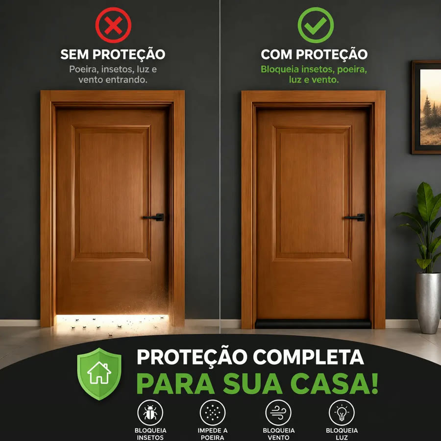
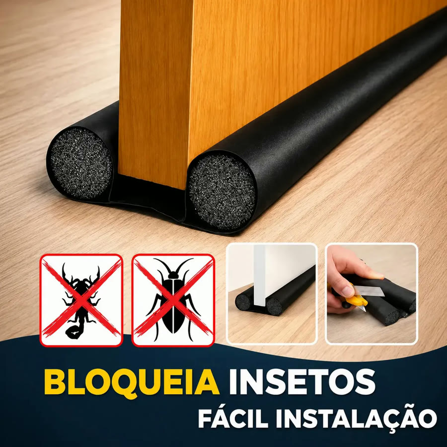

Achado nº 55
Rolo veda-porta ajustável de 90 cm



O que diz a página oficial do produto
- É um veda-porta de rolinho duplo da marca Kapwing: encaixa embaixo da porta, com um rolinho de cada lado
- É de PVC e polietileno expandido, preto, com 90 cm de comprimento
- É impermeável e lavável
- Segundo o anúncio, pode ser ajustado ao tamanho da porta e instala sem ferramentas
- Segundo o anúncio, ajuda a barrar poeira, vento, água, insetos e ruídos
- No Mercado Livre, tem nota 4,6 com mais de 3 mil avaliações e mais de 10 mil vendidos
Link de afiliado: se você comprar por ele, a Achadaria pode receber uma comissão, sem custo extra para você. Preço, estoque e entrega são da loja e podem mudar; confira lá antes de comprar.